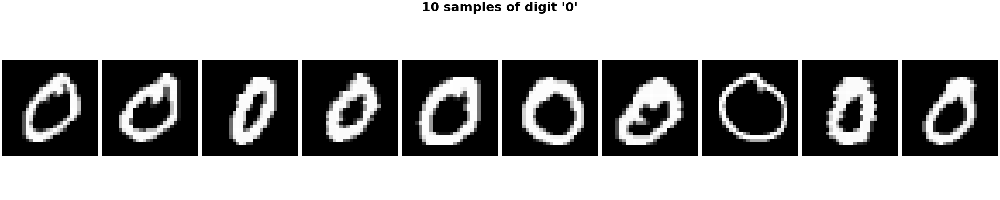

Note
Go to the end to download the full example code.
Use AMICA in a Scikit-Learn Pipeline¶
We’ll use AMICA as a preprocessing step in a scikit-learn pipeline to perform digit classification on the MNIST dataset.
import numpy as np
import matplotlib.pyplot as plt
from sklearn.datasets import fetch_openml
from sklearn.model_selection import train_test_split
from sklearn.preprocessing import StandardScaler
from sklearn.pipeline import Pipeline
from sklearn.linear_model import LogisticRegression
from sklearn.metrics import classification_report
from amica import AMICA
Load & split dataset
Download MNIST (70k samples, 28×28 flattened)
X, y = fetch_openml("mnist_784", version=1, return_X_y=True, as_frame=False)
# Just take digits 0-3 to speed up computation
mask = np.isin(y, ["0", "1", "2", "3"])
X = X[mask].copy()
y = y[mask].copy().astype(int)
# Train/test split: 60k / 10k
X_train, X_test, y_train, y_test = train_test_split(
X, y, test_size=1/7.0, shuffle=True, random_state=0
)
Build scikit-learn pipeline with AMICA¶
pipe = Pipeline([
("center", StandardScaler(with_std=False)), # remove global brightness bias
("amica", AMICA(n_components=60, max_iter=200, tol=.0001, random_state=0)),
("scale_components", StandardScaler()), # optional but helps LR
("logreg", LogisticRegression(
max_iter=2000,
n_jobs=-1
)),
])
Fit¶
INFO | getting the mean ... - amica.linalg:pre_whiten
INFO | Getting the covariance matrix ... - amica.linalg:pre_whiten
INFO | doing eigenvalue decomposition for 784 features ... - amica.linalg:pre_whiten
INFO | minimum eigenvalues: [-4.55850415e-11 -1.37865864e-11 -9.74983741e-12] - amica.linalg:pre_whiten
INFO | maximum eigenvalues: [596392.34842133 273364.62125472 259801.83424473] - amica.linalg:pre_whiten
INFO | num eigvals kept: 60 - amica.linalg:pre_whiten
INFO | Sphering the data... - amica.linalg:pre_whiten
INFO | numeigs = 60, nw = 60 - amica.linalg:pre_whiten
/home/circleci/project/amica-python/src/amica/linalg.py:342: RuntimeWarning: invalid value encountered in sqrt
Winv = (eigvecs * np.sqrt(eigvals)) @ eigvecs.T # Inverse of the whitening matrix
INFO | 1: block size = 24780 - amica.core:solve
INFO | Solving. (please be patient, this may take a while)... - amica.core:solve
INFO | Iteration 1, lrate = 0.05000, LL = -6.5243895, nd = 0.0415497, D = 0.01434 0.01434 took 1.20 seconds - amica.core:optimize
INFO | Iteration 2, lrate = 0.05000, LL = -6.4861523, nd = 0.0129749, D = 0.01268 0.01268 took 0.71 seconds - amica.core:optimize
INFO | Iteration 3, lrate = 0.05000, LL = -6.4808012, nd = 0.0090087, D = 0.01060 0.01060 took 0.50 seconds - amica.core:optimize
INFO | Iteration 4, lrate = 0.05000, LL = -6.4791316, nd = 0.0101784, D = 0.00911 0.00911 took 0.69 seconds - amica.core:optimize
INFO | Iteration 5, lrate = 0.05000, LL = -6.4780993, nd = 0.0109128, D = 0.00882 0.00882 took 0.60 seconds - amica.core:optimize
INFO | Iteration 6, lrate = 0.05000, LL = -6.4772792, nd = 0.0112488, D = 0.00985 0.00985 took 0.91 seconds - amica.core:optimize
INFO | Iteration 7, lrate = 0.05000, LL = -6.4765437, nd = 0.0113766, D = 0.01212 0.01212 took 1.09 seconds - amica.core:optimize
INFO | Iteration 8, lrate = 0.05000, LL = -6.4758150, nd = 0.0114144, D = 0.01545 0.01545 took 0.80 seconds - amica.core:optimize
INFO | Iteration 9, lrate = 0.05000, LL = -6.4750832, nd = 0.0113253, D = 0.01962 0.01962 took 0.79 seconds - amica.core:optimize
INFO | Iteration 10, lrate = 0.05000, LL = -6.4743591, nd = 0.0111891, D = 0.02435 0.02435 took 0.51 seconds - amica.core:optimize
INFO | Iteration 11, lrate = 0.05000, LL = -6.4736558, nd = 0.0111960, D = 0.02933 0.02933 took 0.50 seconds - amica.core:optimize
INFO | Iteration 12, lrate = 0.05000, LL = -6.4729710, nd = 0.0114033, D = 0.03436 0.03436 took 0.59 seconds - amica.core:optimize
INFO | Iteration 13, lrate = 0.05000, LL = -6.4722917, nd = 0.0116815, D = 0.03951 0.03951 took 0.41 seconds - amica.core:optimize
INFO | Iteration 14, lrate = 0.05000, LL = -6.4716084, nd = 0.0118143, D = 0.04494 0.04494 took 0.50 seconds - amica.core:optimize
INFO | Iteration 15, lrate = 0.05000, LL = -6.4709232, nd = 0.0119535, D = 0.05060 0.05060 took 0.59 seconds - amica.core:optimize
INFO | Iteration 16, lrate = 0.05000, LL = -6.4702363, nd = 0.0121632, D = 0.05642 0.05642 took 0.41 seconds - amica.core:optimize
INFO | Iteration 17, lrate = 0.05000, LL = -6.4695531, nd = 0.0125996, D = 0.06211 0.06211 took 0.41 seconds - amica.core:optimize
INFO | Iteration 18, lrate = 0.05000, LL = -6.4689012, nd = 0.0186902, D = 0.06824 0.06824 took 0.50 seconds - amica.core:optimize
INFO | Iteration 19, lrate = 0.05000, LL = -6.4703918, nd = 0.1125036, D = 0.07251 0.07251 took 0.69 seconds - amica.core:optimize
INFO | Likelihood decreasing! - amica.core:optimize
INFO | Iteration 20, lrate = 0.05000, LL = -6.4791267, nd = 0.0333701, D = 0.14033 0.14033 took 0.50 seconds - amica.core:optimize
INFO | Likelihood decreasing! - amica.core:optimize
INFO | Iteration 21, lrate = 0.05000, LL = -6.4755266, nd = 0.0172575, D = 0.11818 0.11818 took 0.51 seconds - amica.core:optimize
INFO | Iteration 22, lrate = 0.05000, LL = -6.4735713, nd = 0.0155490, D = 0.11126 0.11126 took 0.49 seconds - amica.core:optimize
INFO | Iteration 23, lrate = 0.05000, LL = -6.4724934, nd = 0.0147957, D = 0.10668 0.10668 took 0.50 seconds - amica.core:optimize
INFO | Iteration 24, lrate = 0.05000, LL = -6.4715328, nd = 0.0149037, D = 0.10501 0.10501 took 0.59 seconds - amica.core:optimize
INFO | Iteration 25, lrate = 0.05000, LL = -6.4705711, nd = 0.0156133, D = 0.10519 0.10519 took 0.60 seconds - amica.core:optimize
INFO | Iteration 26, lrate = 0.05000, LL = -6.4695712, nd = 0.0158850, D = 0.10647 0.10647 took 0.61 seconds - amica.core:optimize
INFO | Iteration 27, lrate = 0.05000, LL = -6.4685190, nd = 0.0191698, D = 0.10797 0.10797 took 0.80 seconds - amica.core:optimize
INFO | Iteration 28, lrate = 0.05000, LL = -6.4669681, nd = 0.0297573, D = 0.10907 0.10907 took 0.69 seconds - amica.core:optimize
INFO | Iteration 29, lrate = 0.05000, LL = -6.4663185, nd = 0.0561644, D = 0.11432 0.11432 took 0.81 seconds - amica.core:optimize
INFO | Iteration 30, lrate = 0.05000, LL = -6.4693035, nd = 0.0441287, D = 0.13091 0.13091 took 0.70 seconds - amica.core:optimize
INFO | Likelihood decreasing! - amica.core:optimize
INFO | Iteration 31, lrate = 0.02500, LL = -6.4668068, nd = 0.0276001, D = 0.12938 0.12938 took 0.70 seconds - amica.core:optimize
INFO | Iteration 32, lrate = 0.02500, LL = -6.4655931, nd = 0.0258256, D = 0.13041 0.13041 took 0.59 seconds - amica.core:optimize
INFO | Iteration 33, lrate = 0.02500, LL = -6.4641182, nd = 0.0353136, D = 0.13028 0.13028 took 0.41 seconds - amica.core:optimize
INFO | Iteration 34, lrate = 0.02500, LL = -6.4628370, nd = 0.0504969, D = 0.13206 0.13206 took 0.59 seconds - amica.core:optimize
INFO | Iteration 35, lrate = 0.02500, LL = -6.4646053, nd = 0.0736697, D = 0.13928 0.13928 took 0.70 seconds - amica.core:optimize
INFO | Likelihood decreasing! - amica.core:optimize
INFO | Iteration 36, lrate = 0.02500, LL = -6.4643495, nd = 0.0717938, D = 0.14322 0.14322 took 0.80 seconds - amica.core:optimize
INFO | Iteration 37, lrate = 0.02500, LL = -6.4634001, nd = 0.0537994, D = 0.14793 0.14793 took 0.51 seconds - amica.core:optimize
INFO | Iteration 38, lrate = 0.02500, LL = -6.4617332, nd = 0.0604380, D = 0.14972 0.14972 took 0.60 seconds - amica.core:optimize
INFO | Iteration 39, lrate = 0.02500, LL = -6.4634185, nd = 0.0811586, D = 0.15377 0.15377 took 0.50 seconds - amica.core:optimize
INFO | Likelihood decreasing! - amica.core:optimize
INFO | Iteration 40, lrate = 0.02500, LL = -6.4630291, nd = 0.0693762, D = 0.15933 0.15933 took 0.51 seconds - amica.core:optimize
INFO | Iteration 41, lrate = 0.02500, LL = -6.4613525, nd = 0.0587348, D = 0.16163 0.16163 took 0.49 seconds - amica.core:optimize
INFO | Iteration 42, lrate = 0.02500, LL = -6.4610297, nd = 0.0750227, D = 0.16395 0.16395 took 0.41 seconds - amica.core:optimize
INFO | Iteration 43, lrate = 0.02500, LL = -6.4622985, nd = 0.0779355, D = 0.16930 0.16930 took 0.80 seconds - amica.core:optimize
INFO | Likelihood decreasing! - amica.core:optimize
INFO | Iteration 44, lrate = 0.01250, LL = -6.4588329, nd = 0.0366178, D = 0.16886 0.16886 took 0.50 seconds - amica.core:optimize
INFO | Iteration 45, lrate = 0.01250, LL = -6.4578089, nd = 0.0523446, D = 0.16949 0.16949 took 1.00 seconds - amica.core:optimize
INFO | Iteration 46, lrate = 0.01250, LL = -6.4582869, nd = 0.0947890, D = 0.17340 0.17340 took 1.10 seconds - amica.core:optimize
INFO | Likelihood decreasing! - amica.core:optimize
INFO | Iteration 47, lrate = 0.01250, LL = -6.4602346, nd = 0.1203329, D = 0.17332 0.17332 took 1.00 seconds - amica.core:optimize
INFO | Likelihood decreasing! - amica.core:optimize
INFO | Iteration 48, lrate = 0.01250, LL = -6.4596463, nd = 0.0884487, D = 0.17833 0.17833 took 0.80 seconds - amica.core:optimize
INFO | Iteration 49, lrate = 0.01250, LL = -6.4576579, nd = 0.0685108, D = 0.17690 0.17690 took 1.09 seconds - amica.core:optimize
INFO | Iteration 50, lrate = 0.01250, LL = -6.4578214, nd = 0.0074782, D = 0.18050 0.18050 took 0.70 seconds - amica.core:optimize
INFO | Likelihood decreasing! - amica.core:optimize
INFO | Starting Newton ... setting numdecs to 0 - amica.core:optimize
INFO | Iteration 51, lrate = 0.01250, LL = -6.4576076, nd = 0.0074761, D = 0.18010 0.18010 took 0.70 seconds - amica.core:optimize
INFO | Iteration 52, lrate = 0.02500, LL = -6.4573290, nd = 0.0074665, D = 0.17933 0.17933 took 0.90 seconds - amica.core:optimize
INFO | Iteration 53, lrate = 0.05000, LL = -6.4568631, nd = 0.0074463, D = 0.17785 0.17785 took 0.99 seconds - amica.core:optimize
INFO | Iteration 54, lrate = 0.10000, LL = -6.4560177, nd = 0.0074057, D = 0.17513 0.17513 took 0.81 seconds - amica.core:optimize
INFO | Iteration 55, lrate = 0.20000, LL = -6.4545357, nd = 0.0073284, D = 0.17050 0.17050 took 0.90 seconds - amica.core:optimize
INFO | Iteration 56, lrate = 0.30000, LL = -6.4527498, nd = 0.0072455, D = 0.16545 0.16545 took 0.70 seconds - amica.core:optimize
INFO | Iteration 57, lrate = 0.40000, LL = -6.4507861, nd = 0.0071759, D = 0.16161 0.16161 took 0.60 seconds - amica.core:optimize
INFO | Iteration 58, lrate = 0.50000, LL = -6.4484390, nd = 0.0071275, D = 0.16040 0.16040 took 0.61 seconds - amica.core:optimize
INFO | Iteration 59, lrate = 0.60000, LL = -6.4456220, nd = 0.0070969, D = 0.16307 0.16307 took 0.59 seconds - amica.core:optimize
INFO | Iteration 60, lrate = 0.70000, LL = -6.4422721, nd = 0.0070814, D = 0.17061 0.17061 took 0.41 seconds - amica.core:optimize
INFO | Iteration 61, lrate = 0.80000, LL = -6.4383216, nd = 0.0070719, D = 0.18385 0.18385 took 0.50 seconds - amica.core:optimize
INFO | Iteration 62, lrate = 0.90000, LL = -6.4336963, nd = 0.0070579, D = 0.20363 0.20363 took 0.51 seconds - amica.core:optimize
INFO | Iteration 63, lrate = 1.00000, LL = -6.4283599, nd = 0.0070100, D = 0.23041 0.23041 took 0.69 seconds - amica.core:optimize
INFO | Iteration 64, lrate = 1.00000, LL = -6.4229447, nd = 0.0069382, D = 0.26135 0.26135 took 0.70 seconds - amica.core:optimize
INFO | Iteration 65, lrate = 1.00000, LL = -6.4177977, nd = 0.0068594, D = 0.29615 0.29615 took 0.69 seconds - amica.core:optimize
INFO | Iteration 66, lrate = 1.00000, LL = -6.4121362, nd = 0.0067744, D = 0.33657 0.33657 took 0.60 seconds - amica.core:optimize
INFO | Iteration 67, lrate = 1.00000, LL = -6.4060021, nd = 0.0065761, D = 0.37930 0.37930 took 0.51 seconds - amica.core:optimize
INFO | Iteration 68, lrate = 1.00000, LL = -6.4003390, nd = 0.0063610, D = 0.42844 0.42844 took 0.89 seconds - amica.core:optimize
INFO | Iteration 69, lrate = 1.00000, LL = -6.3939544, nd = 0.0060206, D = 0.47510 0.47510 took 1.01 seconds - amica.core:optimize
INFO | Iteration 70, lrate = 1.00000, LL = -6.3888856, nd = 0.0057934, D = 0.52636 0.52636 took 0.90 seconds - amica.core:optimize
INFO | Iteration 71, lrate = 1.00000, LL = -6.3829314, nd = 0.0055040, D = 0.56811 0.56811 took 0.69 seconds - amica.core:optimize
INFO | Iteration 72, lrate = 1.00000, LL = -6.3789269, nd = 0.0053451, D = 0.61570 0.61570 took 0.51 seconds - amica.core:optimize
INFO | Iteration 73, lrate = 1.00000, LL = -6.3735136, nd = 0.0051206, D = 0.65077 0.65077 took 0.60 seconds - amica.core:optimize
INFO | Iteration 74, lrate = 1.00000, LL = -6.3702764, nd = 0.0050093, D = 0.69548 0.69548 took 0.58 seconds - amica.core:optimize
INFO | Iteration 75, lrate = 1.00000, LL = -6.3651963, nd = 0.0048685, D = 0.72699 0.72699 took 0.50 seconds - amica.core:optimize
INFO | Iteration 76, lrate = 1.00000, LL = -6.3626268, nd = 0.0048629, D = 0.77045 0.77045 took 0.41 seconds - amica.core:optimize
INFO | Iteration 77, lrate = 1.00000, LL = -6.3576454, nd = 0.0048987, D = 0.80208 0.80208 took 0.59 seconds - amica.core:optimize
INFO | Iteration 78, lrate = 1.00000, LL = -6.3558483, nd = 0.0051362, D = 0.84412 0.84412 took 0.51 seconds - amica.core:optimize
INFO | Iteration 79, lrate = 1.00000, LL = -6.3510374, nd = 0.0054701, D = 0.88000 0.88000 took 0.59 seconds - amica.core:optimize
INFO | Iteration 80, lrate = 1.00000, LL = -6.3504550, nd = 0.0059530, D = 0.91685 0.91685 took 0.41 seconds - amica.core:optimize
INFO | Iteration 81, lrate = 1.00000, LL = -6.3453139, nd = 0.0062813, D = 0.95503 0.95503 took 0.59 seconds - amica.core:optimize
INFO | Iteration 82, lrate = 1.00000, LL = -6.3457790, nd = 0.0066213, D = 0.98308 0.98308 took 0.41 seconds - amica.core:optimize
INFO | Likelihood decreasing! - amica.core:optimize
INFO | Iteration 83, lrate = 0.60000, LL = -6.3360837, nd = 0.0045883, D = 0.99623 0.99623 took 0.49 seconds - amica.core:optimize
INFO | Iteration 84, lrate = 0.70000, LL = -6.3324224, nd = 0.0043503, D = 1.01486 1.01486 took 0.51 seconds - amica.core:optimize
INFO | Iteration 85, lrate = 0.80000, LL = -6.3306144, nd = 0.0043855, D = 1.03649 1.03649 took 0.59 seconds - amica.core:optimize
INFO | Iteration 86, lrate = 0.90000, LL = -6.3301312, nd = 0.0049489, D = 1.05683 1.05683 took 0.59 seconds - amica.core:optimize
INFO | Iteration 87, lrate = 1.00000, LL = -6.3298585, nd = 0.0056782, D = 1.08821 1.08821 took 0.51 seconds - amica.core:optimize
INFO | Iteration 88, lrate = 1.00000, LL = -6.3288477, nd = 0.0064256, D = 1.09985 1.09985 took 0.50 seconds - amica.core:optimize
INFO | Iteration 89, lrate = 1.00000, LL = -6.3287455, nd = 0.0067441, D = 1.12891 1.12891 took 0.59 seconds - amica.core:optimize
INFO | Iteration 90, lrate = 1.00000, LL = -6.3264905, nd = 0.0075311, D = 1.13862 1.13862 took 0.50 seconds - amica.core:optimize
INFO | Iteration 91, lrate = 1.00000, LL = -6.3287674, nd = 0.0078948, D = 1.16431 1.16431 took 0.71 seconds - amica.core:optimize
INFO | Likelihood decreasing! - amica.core:optimize
INFO | Iteration 92, lrate = 0.60000, LL = -6.3185297, nd = 0.0051044, D = 1.15973 1.15973 took 0.99 seconds - amica.core:optimize
INFO | Iteration 93, lrate = 0.70000, LL = -6.3150693, nd = 0.0043123, D = 1.17577 1.17577 took 0.70 seconds - amica.core:optimize
INFO | Iteration 94, lrate = 0.80000, LL = -6.3148444, nd = 0.0047902, D = 1.18361 1.18361 took 0.51 seconds - amica.core:optimize
INFO | Iteration 95, lrate = 0.90000, LL = -6.3148217, nd = 0.0058467, D = 1.21575 1.21575 took 0.80 seconds - amica.core:optimize
INFO | Iteration 96, lrate = 1.00000, LL = -6.3180188, nd = 0.0071053, D = 1.22671 1.22671 took 0.59 seconds - amica.core:optimize
INFO | Likelihood decreasing! - amica.core:optimize
INFO | Reducing maximum Newton lrate - amica.core:optimize
INFO | Iteration 97, lrate = 0.50000, LL = -6.3089171, nd = 0.0034164, D = 1.23637 1.23637 took 0.80 seconds - amica.core:optimize
INFO | Iteration 98, lrate = 0.50000, LL = -6.3068210, nd = 0.0029122, D = 1.24561 1.24561 took 0.80 seconds - amica.core:optimize
INFO | Iteration 99, lrate = 0.50000, LL = -6.3055717, nd = 0.0027403, D = 1.25728 1.25728 took 0.70 seconds - amica.core:optimize
INFO | Iteration 100, lrate = 0.50000, LL = -6.3045452, nd = 0.0027134, D = 1.26755 1.26755 took 0.90 seconds - amica.core:optimize
INFO | Iteration 101, lrate = 0.50000, LL = -6.3042741, nd = 0.0027452, D = 1.26755 1.26755 took 0.81 seconds - amica.core:optimize
INFO | Iteration 102, lrate = 0.50000, LL = -6.3040822, nd = 0.0027738, D = 1.26755 1.26755 took 0.68 seconds - amica.core:optimize
INFO | Iteration 103, lrate = 0.50000, LL = -6.3039256, nd = 0.0027979, D = 1.26755 1.26755 took 0.60 seconds - amica.core:optimize
INFO | Iteration 104, lrate = 0.50000, LL = -6.3037892, nd = 0.0028188, D = 1.26755 1.26755 took 0.79 seconds - amica.core:optimize
INFO | Iteration 105, lrate = 0.50000, LL = -6.3036676, nd = 0.0028370, D = 1.26755 1.26755 took 0.81 seconds - amica.core:optimize
INFO | Iteration 106, lrate = 0.50000, LL = -6.3035569, nd = 0.0028535, D = 1.26755 1.26755 took 0.90 seconds - amica.core:optimize
INFO | Iteration 107, lrate = 0.50000, LL = -6.3025995, nd = 0.0027552, D = 1.28425 1.28425 took 0.79 seconds - amica.core:optimize
INFO | Iteration 108, lrate = 0.50000, LL = -6.3017145, nd = 0.0027262, D = 1.29590 1.29590 took 0.61 seconds - amica.core:optimize
INFO | Iteration 109, lrate = 0.50000, LL = -6.3008569, nd = 0.0027007, D = 1.30795 1.30795 took 0.59 seconds - amica.core:optimize
INFO | Iteration 110, lrate = 0.50000, LL = -6.3000190, nd = 0.0026940, D = 1.31886 1.31886 took 0.61 seconds - amica.core:optimize
INFO | Iteration 111, lrate = 0.50000, LL = -6.2992008, nd = 0.0026793, D = 1.32918 1.32918 took 0.89 seconds - amica.core:optimize
INFO | Iteration 112, lrate = 0.50000, LL = -6.2984069, nd = 0.0026824, D = 1.33990 1.33990 took 0.91 seconds - amica.core:optimize
INFO | Iteration 113, lrate = 0.50000, LL = -6.2976417, nd = 0.0026664, D = 1.34901 1.34901 took 0.79 seconds - amica.core:optimize
INFO | Iteration 114, lrate = 0.50000, LL = -6.2969230, nd = 0.0026729, D = 1.35980 1.35980 took 0.60 seconds - amica.core:optimize
INFO | Iteration 115, lrate = 0.50000, LL = -6.2962247, nd = 0.0026493, D = 1.36780 1.36780 took 0.70 seconds - amica.core:optimize
INFO | Iteration 116, lrate = 0.50000, LL = -6.2955677, nd = 0.0026498, D = 1.37883 1.37883 took 0.71 seconds - amica.core:optimize
INFO | Iteration 117, lrate = 0.50000, LL = -6.2948702, nd = 0.0026071, D = 1.38576 1.38576 took 0.79 seconds - amica.core:optimize
INFO | Iteration 118, lrate = 0.50000, LL = -6.2942057, nd = 0.0025938, D = 1.39671 1.39671 took 0.70 seconds - amica.core:optimize
INFO | Iteration 119, lrate = 0.50000, LL = -6.2935170, nd = 0.0025353, D = 1.40281 1.40281 took 0.61 seconds - amica.core:optimize
INFO | Iteration 120, lrate = 0.50000, LL = -6.2929042, nd = 0.0025181, D = 1.41352 1.41352 took 0.59 seconds - amica.core:optimize
INFO | Iteration 121, lrate = 0.50000, LL = -6.2922111, nd = 0.0024550, D = 1.41881 1.41881 took 0.60 seconds - amica.core:optimize
INFO | Iteration 122, lrate = 0.50000, LL = -6.2916084, nd = 0.0024353, D = 1.42914 1.42914 took 0.60 seconds - amica.core:optimize
INFO | Iteration 123, lrate = 0.50000, LL = -6.2909448, nd = 0.0023674, D = 1.43381 1.43381 took 0.70 seconds - amica.core:optimize
INFO | Iteration 124, lrate = 0.50000, LL = -6.2903760, nd = 0.0023480, D = 1.44387 1.44387 took 0.72 seconds - amica.core:optimize
INFO | Iteration 125, lrate = 0.50000, LL = -6.2897622, nd = 0.0022856, D = 1.44800 1.44800 took 0.89 seconds - amica.core:optimize
INFO | Iteration 126, lrate = 0.50000, LL = -6.2892112, nd = 0.0022702, D = 1.45780 1.45780 took 2.26 seconds - amica.core:optimize
INFO | Iteration 127, lrate = 0.50000, LL = -6.2886348, nd = 0.0022129, D = 1.46148 1.46148 took 1.13 seconds - amica.core:optimize
INFO | Iteration 128, lrate = 0.50000, LL = -6.2881465, nd = 0.0022090, D = 1.47113 1.47113 took 0.71 seconds - amica.core:optimize
INFO | Iteration 129, lrate = 0.50000, LL = -6.2875707, nd = 0.0021563, D = 1.47436 1.47436 took 0.59 seconds - amica.core:optimize
INFO | Iteration 130, lrate = 0.50000, LL = -6.2871097, nd = 0.0021572, D = 1.48383 1.48383 took 0.50 seconds - amica.core:optimize
INFO | Iteration 131, lrate = 0.50000, LL = -6.2865518, nd = 0.0021054, D = 1.48666 1.48666 took 0.61 seconds - amica.core:optimize
INFO | Iteration 132, lrate = 0.50000, LL = -6.2860632, nd = 0.0021008, D = 1.49607 1.49607 took 0.79 seconds - amica.core:optimize
INFO | Iteration 133, lrate = 0.50000, LL = -6.2855750, nd = 0.0020558, D = 1.49877 1.49877 took 0.81 seconds - amica.core:optimize
INFO | Iteration 134, lrate = 0.50000, LL = -6.2851459, nd = 0.0020635, D = 1.50809 1.50809 took 0.69 seconds - amica.core:optimize
INFO | Iteration 135, lrate = 0.50000, LL = -6.2846418, nd = 0.0020203, D = 1.51055 1.51055 took 0.60 seconds - amica.core:optimize
INFO | Iteration 136, lrate = 0.50000, LL = -6.2842253, nd = 0.0020286, D = 1.51984 1.51984 took 0.61 seconds - amica.core:optimize
INFO | Iteration 137, lrate = 0.50000, LL = -6.2837451, nd = 0.0019901, D = 1.52205 1.52205 took 0.59 seconds - amica.core:optimize
INFO | Iteration 138, lrate = 0.50000, LL = -6.2833508, nd = 0.0020074, D = 1.53132 1.53132 took 0.60 seconds - amica.core:optimize
INFO | Iteration 139, lrate = 0.50000, LL = -6.2828859, nd = 0.0019705, D = 1.53359 1.53359 took 0.80 seconds - amica.core:optimize
INFO | Iteration 140, lrate = 0.50000, LL = -6.2825004, nd = 0.0019875, D = 1.54297 1.54297 took 0.61 seconds - amica.core:optimize
INFO | Iteration 141, lrate = 0.50000, LL = -6.2820259, nd = 0.0019473, D = 1.54511 1.54511 took 0.78 seconds - amica.core:optimize
INFO | Iteration 142, lrate = 0.50000, LL = -6.2816847, nd = 0.0019694, D = 1.55443 1.55443 took 0.70 seconds - amica.core:optimize
INFO | Iteration 143, lrate = 0.50000, LL = -6.2812211, nd = 0.0019327, D = 1.55649 1.55649 took 0.70 seconds - amica.core:optimize
INFO | Iteration 144, lrate = 0.50000, LL = -6.2808974, nd = 0.0019591, D = 1.56569 1.56569 took 0.69 seconds - amica.core:optimize
INFO | Iteration 145, lrate = 0.50000, LL = -6.2804648, nd = 0.0019279, D = 1.56748 1.56748 took 0.71 seconds - amica.core:optimize
INFO | Iteration 146, lrate = 0.50000, LL = -6.2801219, nd = 0.0019526, D = 1.57664 1.57664 took 0.69 seconds - amica.core:optimize
INFO | Iteration 147, lrate = 0.50000, LL = -6.2797113, nd = 0.0019234, D = 1.57821 1.57821 took 0.61 seconds - amica.core:optimize
INFO | Iteration 148, lrate = 0.50000, LL = -6.2793425, nd = 0.0019457, D = 1.58722 1.58722 took 0.59 seconds - amica.core:optimize
INFO | Iteration 149, lrate = 0.50000, LL = -6.2789870, nd = 0.0019175, D = 1.58863 1.58863 took 0.60 seconds - amica.core:optimize
INFO | Iteration 150, lrate = 0.50000, LL = -6.2786411, nd = 0.0019467, D = 1.59751 1.59751 took 0.59 seconds - amica.core:optimize
INFO | Iteration 151, lrate = 0.50000, LL = -6.2782637, nd = 0.0019162, D = 1.59862 1.59862 took 0.51 seconds - amica.core:optimize
INFO | Iteration 152, lrate = 0.50000, LL = -6.2779358, nd = 0.0019482, D = 1.60737 1.60737 took 0.59 seconds - amica.core:optimize
INFO | Iteration 153, lrate = 0.50000, LL = -6.2775690, nd = 0.0019191, D = 1.60825 1.60825 took 0.51 seconds - amica.core:optimize
INFO | Iteration 154, lrate = 0.50000, LL = -6.2772547, nd = 0.0019555, D = 1.61699 1.61699 took 0.69 seconds - amica.core:optimize
INFO | Iteration 155, lrate = 0.50000, LL = -6.2768909, nd = 0.0019242, D = 1.61775 1.61775 took 0.50 seconds - amica.core:optimize
INFO | Iteration 156, lrate = 0.50000, LL = -6.2765836, nd = 0.0019657, D = 1.62651 1.62651 took 0.60 seconds - amica.core:optimize
INFO | Iteration 157, lrate = 0.50000, LL = -6.2762314, nd = 0.0019364, D = 1.62709 1.62709 took 0.51 seconds - amica.core:optimize
INFO | Iteration 158, lrate = 0.50000, LL = -6.2759476, nd = 0.0019859, D = 1.63586 1.63586 took 0.59 seconds - amica.core:optimize
INFO | Iteration 159, lrate = 0.50000, LL = -6.2756121, nd = 0.0019596, D = 1.63614 1.63614 took 0.71 seconds - amica.core:optimize
INFO | Iteration 160, lrate = 0.50000, LL = -6.2753478, nd = 0.0020180, D = 1.64500 1.64500 took 0.59 seconds - amica.core:optimize
INFO | Iteration 161, lrate = 0.50000, LL = -6.2749971, nd = 0.0019899, D = 1.64503 1.64503 took 0.70 seconds - amica.core:optimize
INFO | Iteration 162, lrate = 0.50000, LL = -6.2747542, nd = 0.0020546, D = 1.65395 1.65395 took 0.70 seconds - amica.core:optimize
INFO | Iteration 163, lrate = 0.50000, LL = -6.2744277, nd = 0.0020228, D = 1.65396 1.65396 took 0.51 seconds - amica.core:optimize
INFO | Iteration 164, lrate = 0.50000, LL = -6.2741605, nd = 0.0020744, D = 1.66288 1.66288 took 0.59 seconds - amica.core:optimize
INFO | Iteration 165, lrate = 0.50000, LL = -6.2738421, nd = 0.0020504, D = 1.66293 1.66293 took 0.61 seconds - amica.core:optimize
INFO | Iteration 166, lrate = 0.50000, LL = -6.2735824, nd = 0.0021020, D = 1.67162 1.67162 took 0.60 seconds - amica.core:optimize
INFO | Iteration 167, lrate = 0.50000, LL = -6.2732498, nd = 0.0020710, D = 1.67169 1.67169 took 0.69 seconds - amica.core:optimize
INFO | Iteration 168, lrate = 0.50000, LL = -6.2729950, nd = 0.0021252, D = 1.68019 1.68019 took 0.60 seconds - amica.core:optimize
INFO | Iteration 169, lrate = 0.50000, LL = -6.2726898, nd = 0.0020909, D = 1.68040 1.68040 took 0.50 seconds - amica.core:optimize
INFO | Iteration 170, lrate = 0.50000, LL = -6.2724349, nd = 0.0021478, D = 1.68863 1.68863 took 0.60 seconds - amica.core:optimize
INFO | Iteration 171, lrate = 0.50000, LL = -6.2721285, nd = 0.0021094, D = 1.68924 1.68924 took 0.51 seconds - amica.core:optimize
INFO | Iteration 172, lrate = 0.50000, LL = -6.2718959, nd = 0.0021737, D = 1.69691 1.69691 took 0.59 seconds - amica.core:optimize
INFO | Iteration 173, lrate = 0.50000, LL = -6.2716129, nd = 0.0021506, D = 1.69806 1.69806 took 0.61 seconds - amica.core:optimize
INFO | Iteration 174, lrate = 0.50000, LL = -6.2713848, nd = 0.0022110, D = 1.70540 1.70540 took 0.60 seconds - amica.core:optimize
INFO | Iteration 175, lrate = 0.50000, LL = -6.2711244, nd = 0.0021898, D = 1.70723 1.70723 took 0.59 seconds - amica.core:optimize
INFO | Iteration 176, lrate = 0.50000, LL = -6.2708900, nd = 0.0022392, D = 1.71412 1.71412 took 0.69 seconds - amica.core:optimize
INFO | Iteration 177, lrate = 0.50000, LL = -6.2706330, nd = 0.0022229, D = 1.71638 1.71638 took 0.60 seconds - amica.core:optimize
INFO | Iteration 178, lrate = 0.50000, LL = -6.2704096, nd = 0.0022712, D = 1.72299 1.72299 took 0.61 seconds - amica.core:optimize
INFO | Iteration 179, lrate = 0.50000, LL = -6.2701545, nd = 0.0022586, D = 1.72572 1.72572 took 0.69 seconds - amica.core:optimize
INFO | Iteration 180, lrate = 0.50000, LL = -6.2699496, nd = 0.0023095, D = 1.73187 1.73187 took 0.60 seconds - amica.core:optimize
INFO | Iteration 181, lrate = 0.50000, LL = -6.2696813, nd = 0.0022886, D = 1.73502 1.73502 took 0.61 seconds - amica.core:optimize
INFO | Iteration 182, lrate = 0.50000, LL = -6.2694500, nd = 0.0023034, D = 1.74082 1.74082 took 0.60 seconds - amica.core:optimize
INFO | Iteration 183, lrate = 0.50000, LL = -6.2691840, nd = 0.0022852, D = 1.74431 1.74431 took 0.60 seconds - amica.core:optimize
INFO | Iteration 184, lrate = 0.50000, LL = -6.2690010, nd = 0.0023258, D = 1.74977 1.74977 took 0.60 seconds - amica.core:optimize
INFO | Iteration 185, lrate = 0.50000, LL = -6.2687694, nd = 0.0023187, D = 1.75383 1.75383 took 0.60 seconds - amica.core:optimize
INFO | Iteration 186, lrate = 0.50000, LL = -6.2685739, nd = 0.0023471, D = 1.75884 1.75884 took 0.60 seconds - amica.core:optimize
INFO | Iteration 187, lrate = 0.50000, LL = -6.2683580, nd = 0.0023436, D = 1.76330 1.76330 took 0.60 seconds - amica.core:optimize
INFO | Iteration 188, lrate = 0.50000, LL = -6.2681770, nd = 0.0023867, D = 1.76784 1.76784 took 0.60 seconds - amica.core:optimize
INFO | Iteration 189, lrate = 0.50000, LL = -6.2679618, nd = 0.0023835, D = 1.77279 1.77279 took 0.61 seconds - amica.core:optimize
INFO | Iteration 190, lrate = 0.50000, LL = -6.2677579, nd = 0.0024103, D = 1.77693 1.77693 took 0.69 seconds - amica.core:optimize
INFO | Iteration 191, lrate = 0.50000, LL = -6.2675601, nd = 0.0024139, D = 1.78228 1.78228 took 0.61 seconds - amica.core:optimize
INFO | Iteration 192, lrate = 0.50000, LL = -6.2673663, nd = 0.0024436, D = 1.78602 1.78602 took 0.71 seconds - amica.core:optimize
INFO | Iteration 193, lrate = 0.50000, LL = -6.2671534, nd = 0.0024386, D = 1.79168 1.79168 took 0.69 seconds - amica.core:optimize
INFO | Iteration 194, lrate = 0.50000, LL = -6.2669361, nd = 0.0024540, D = 1.79511 1.79511 took 0.70 seconds - amica.core:optimize
INFO | Iteration 195, lrate = 0.50000, LL = -6.2667458, nd = 0.0024605, D = 1.80103 1.80103 took 0.70 seconds - amica.core:optimize
INFO | Iteration 196, lrate = 0.50000, LL = -6.2665561, nd = 0.0024960, D = 1.80426 1.80426 took 0.70 seconds - amica.core:optimize
INFO | Iteration 197, lrate = 0.50000, LL = -6.2663805, nd = 0.0025046, D = 1.81050 1.81050 took 0.60 seconds - amica.core:optimize
INFO | Iteration 198, lrate = 0.50000, LL = -6.2661707, nd = 0.0025312, D = 1.81345 1.81345 took 0.60 seconds - amica.core:optimize
INFO | Iteration 199, lrate = 0.50000, LL = -6.2659850, nd = 0.0025312, D = 1.81999 1.81999 took 0.60 seconds - amica.core:optimize
INFO | Iteration 200, lrate = 0.50000, LL = -6.2657876, nd = 0.0025715, D = 1.82265 1.82265 took 0.59 seconds - amica.core:optimize
WARNING | Maximum number of iterations reached before convergence. Consider increasing max_iter or relaxing tol. - amica.core:optimize
INFO | Finished in 132.70 seconds - amica.core:optimize
Evaluate¶
y_pred = pipe.predict(X_test)
print(classification_report(
y_test, y_pred, target_names=[str(i) for i in range(4)]
))
print(f"Accuracy: {pipe.score(X_test, y_test):.4f}")
precision recall f1-score support
0 0.98 0.99 0.98 951
1 0.98 0.99 0.99 1135
2 0.96 0.95 0.95 988
3 0.97 0.96 0.97 1057
accuracy 0.97 4131
macro avg 0.97 0.97 0.97 4131
weighted avg 0.97 0.97 0.97 4131
Accuracy: 0.9729
Important features for the 0 digit¶
We can select the most important ICA features for the 0 class (with negative and positive weights) and display their associate ICA sources.
Helper¶
def imshow_row(images, titles=None, figsize=(20, 4), suptitle=None, cmap="gray"):
fig, axes = plt.subplots(1, len(images), figsize=figsize, constrained_layout=True)
if suptitle:
fig.suptitle(suptitle, fontsize=18, fontweight="bold")
for i, ax in enumerate(axes):
ax.imshow(images[i].reshape(28, 28), cmap=cmap)
ax.axis("off")
if titles is not None:
ax.set_title(titles[i])
return fig
Show sample digits of class 0¶
Top positive / negative logistic weights¶
logreg = pipe.named_steps["logreg"]
amica = pipe.named_steps["amica"]
coef = logreg.coef_[0]
sorted_idx = np.argsort(coef)
top_pos = sorted_idx[-5:][::-1]
top_neg = sorted_idx[:5]
imshow_row(
amica.components_[top_pos],
titles=[f"Comp {i}" for i in top_pos],
suptitle="Top 5 positive AMICA components for class 0"
)
plt.show()
imshow_row(
amica.components_[top_neg],
titles=[f"Comp {i}" for i in top_neg],
suptitle="Top 5 negative AMICA components for class 0"
)
plt.show()
Total running time of the script: (3 minutes 35.351 seconds)